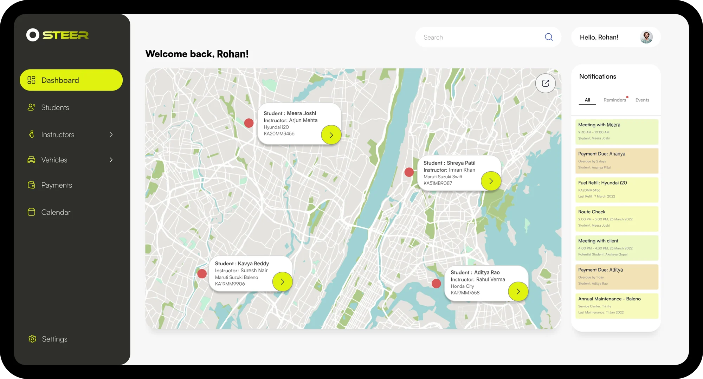
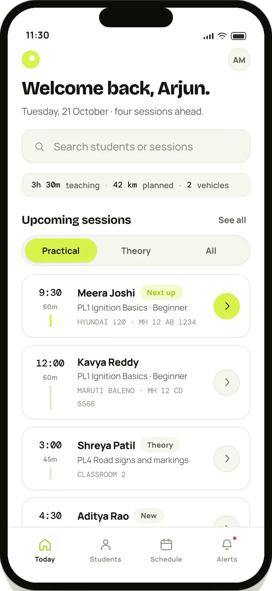
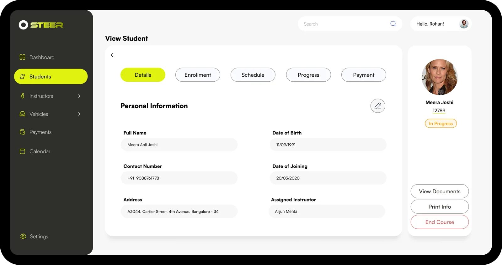
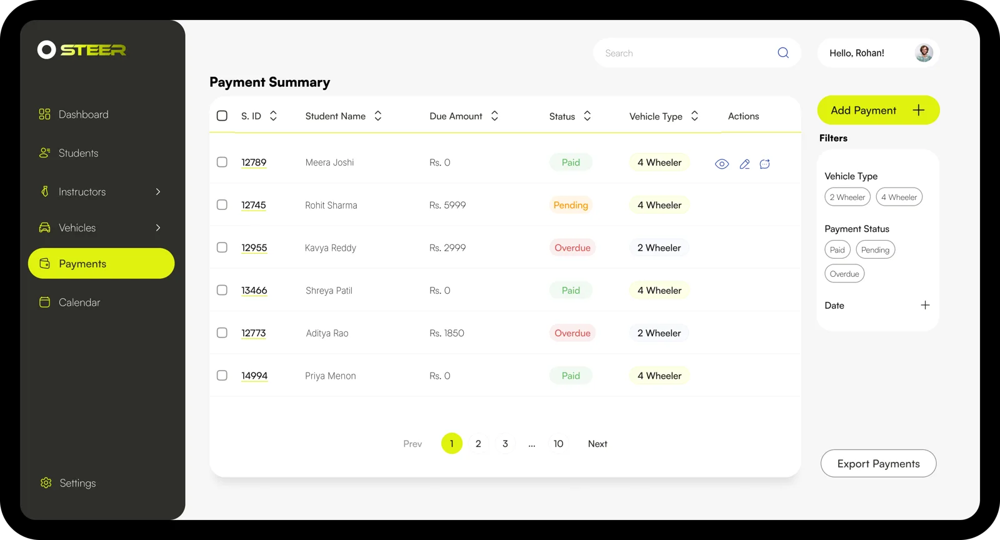
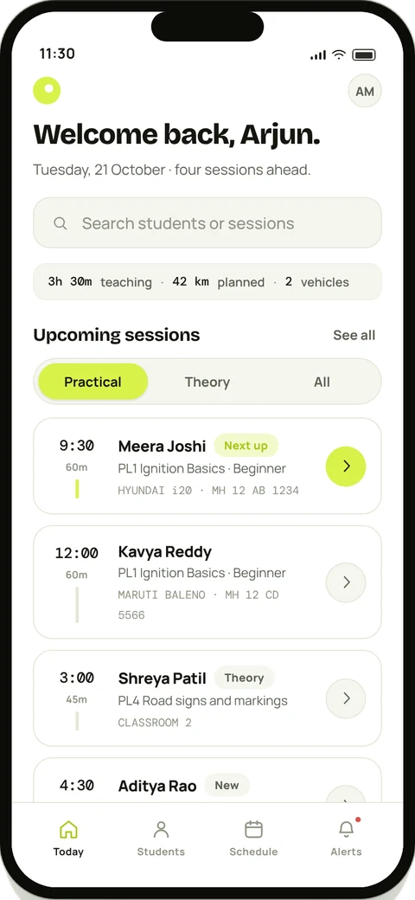
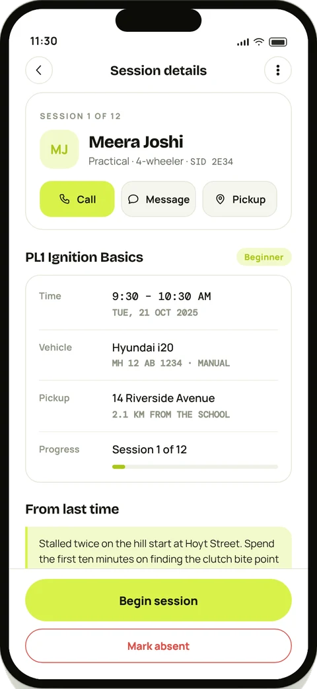
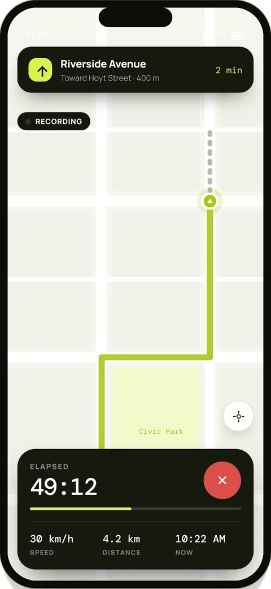
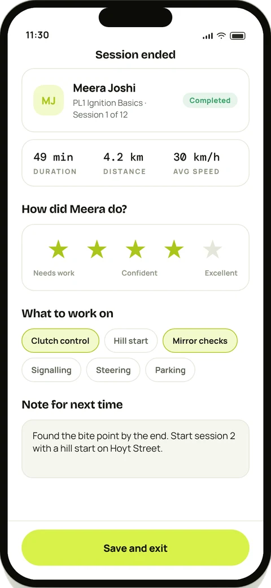
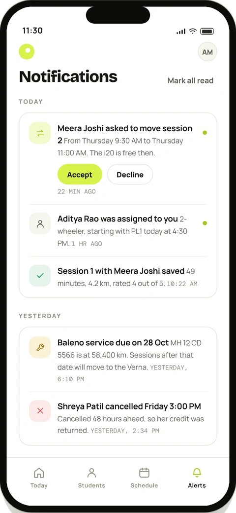

Steer
Taking a driving school off the group chat.
Steer gives supervisors one live view of the school and gives instructors a clear view of the next lesson. Both work from the same record, so a change made at the desk reaches the car, and a lesson logged in the car gets back to the desk.
View tutorial/prototype (opens in a new tab)- Role
- Solo UX/UI designerResearch, IA, interaction and visual design
- Timeline
- 3 monthsDiscovery through high-fidelity prototypes
- Platforms
- Web app for supervisorsMobile app for instructors
- Team
- Just meNo PM or engineering partner; decisions checked with schools directly
- Research
- 9 schools, 16 on-site interviews5 supervisors and 11 instructors, small to mid-size schools
- Constraints
- Concept project, no live dataUsers with little time to learn new tools; instructors working one-handed from a car

Supervisor web app · live map dashboard
Problem and solution
Problem
Small driving schools keep lessons, fees, documents and vehicles in paper registers, Excel and WhatsApp. None of them update each other, so a clash, an unpaid fee or a missing document shows up only once it has already cost a lesson.
Solution
Two front ends on one shared record. A map-first web dashboard answers “where is everyone, and what needs attention?” A today-first mobile app tells an instructor who is next and lets them start and log the lesson in a tap.

It started with a register at the front desk.
I signed up to learn to ride. The school kept every student in a handwritten book.
One learner's record was already awkward to manage. I wanted to know what happened when the same school had to keep lessons, fees, instructor assignments and vehicle maintenance straight at once, across a full day of cars on the road.
So I went looking at how other schools did it, and ended up visiting nine of them.
Most schools I visited still run on paper.
India's driving school market is fragmented and largely informal. Purpose-built software exists, but the schools I visited managed records on paper or in a general-purpose spreadsheet.
Share of the 9 schools by main record-keeping tool, as reported in my research notes. Full method in section 03.
The register is a legal trail, not just admin.
A learner who trains at a school gets a Form 5 driving training certificate. The school fills it from its own register.
A record that's hard to find or correct delays a learner's test, not just the office's paperwork.
They asked for better organisation. The work was breaking between people.
“Better organisation.”
That points to a tidier register: one filing system, fewer versions of the same sheet.
A live, multi-vehicle operation coordinated through a group chat.
That needs a shared record that moves between the office and the car while lessons are running.
Today a schedule change and a lesson outcome travel in opposite directions, through different tools, with nothing in the middle that both sides can read.
A schedule change could live in a message while the office worked from an older copy. A fee or a missing document could go unnoticed until it delayed a lesson. Each task was manageable on its own. The failures happened between them.
carry one lesson record from the office schedule to the instructor's next action and back, without adding admin to either side?
Out of scope for now: a student app, instructor payouts and rescheduling, and an AI copilot. They are on the roadmap in section 13.
I went to the schools instead of sending a survey.
At each school I asked how they teach a lesson, keep records, and coordinate the work around each booking.
Every school teaches on the road
The core product is a lesson in a moving vehicle, away from the office. That made the instructor's phone a primary surface, not an afterthought.
Share of schools, as reported in my research notes. The per-question base was not recorded, so read these as directional.
“I have no idea which route my instructors are taking with students. I only find out if something goes wrong.”
“Every morning I call the office to find out which student I have and at what time. Half the time the information is wrong.”
Secondary research: India's Form 5 training certificate (section 01), and Drive Scout, a purpose-built tool that already combines scheduling, payments and records. Steer's angle is carrying one lesson from the office to the car and back.
Seven clusters, four insights, one through-line.
I grouped interview notes by recurring problem. Every cluster came up with both supervisors and instructors.
Affinity clusters on the left, the insight each one feeds on the right. Insight 1 is the one the rest of the design hangs on.
Failures happen at the handoff between desk and car.
“It's difficult to monitor student progress over time.” Instructor
Design implication. One lesson record that both apps read and write. A change at the desk reaches the car, and a lesson outcome gets back to the office without a call.
Supervisors need to monitor, not look things up.
“I need reports to identify which instructors need training or which students are lagging.” Manager
Design implication. The supervisor's home screen shows live status for every lesson at once. Records are one click away, not the starting point.
Fees, documents and vehicle checks fail silently.
“Students often delay payments, and we don't have a proper system to send reminders.” Manager
Design implication. The system raises what's overdue, missing or due for service, so nobody has to remember to check.
Any new tool competes with teaching time.
“Learning a new tool feels daunting when I already have a busy schedule.” Instructor
Design implication. Familiar patterns, no training to start, and logging that takes less effort than the paper it replaces.
Same school, same lesson, two very different working days.
Framed by context and jobs, not demographics. This is where the web and mobile split came from.
When lessons are running across the city, I want to see where every lesson stands and what's overdue, so I can fix a problem before it costs a lesson.
Functional. Keep schedules, payments, documents and vehicles reconciled
Emotional. Feel ahead of problems instead of hearing about them last
Hired today. Register, Excel, the WhatsApp group, phone calls
When I start my day or my next lesson, I want to know who, when, where and what we covered last time, so I can teach instead of calling the office.
Functional. An accurate schedule, the learner's history, a fast way to log the lesson
Emotional. Go into each lesson prepared, without learning new software
Hired today. A morning call, chat messages, memory, paper progress sheets
The lesson crosses between them three times. Each crossing is where it breaks.
The lesson's path today. Steps inside one lane mostly work. The crossings between office and car are where information arrives late, can't be seen, or gets lost.
Four rules, one for each insight.
One lesson, one record
Both apps read and write the same lesson. Nothing is typed twice.
From. Insight 1 · the handoff
Shows up as. A schedule edit reaching Today
Status before records
The supervisor sees what's happening now before opening anything.
From. Insight 2 · monitoring
Shows up as. The map-first dashboard
Let the system remember
Overdue fees, missing documents and service dates come to you.
From. Insight 3 · silent failures
Shows up as. Reminders beside the map
One clear next step
In the car, show today and the next action, within reach of one thumb.
From. Insight 4 · teaching time
Shows up as. Today screen, one-tap start
Six places at the desk, four steps in the car, one record between them.
Tabs: Today · Students · Schedule · Alerts
- 1schedule change reaches Today
- 2live status reaches the map
- 3lesson outcome reaches the student record
The supervisor's web app branches into six areas after onboarding. The instructor's app is a loop through each lesson. The three dashed journeys are the ones the design is built to protect.
Where should a supervisor look first?
I took rough paper versions of three dashboards to supervisors. With each one, their first question was about location.
List-first
Familiar and quick to sort. Supervisors still asked where everyone was.
Session cards
Showed more per lesson. Location still took effort to piece together.
Map-first
Active vehicles in view, reminders alongside, details one click away.
At the desk I traded simplicity for coverage. In the car I did the reverse.
Five moments, one lesson, two screens.
Where is everyone, and what needs attention?
Each pin carries student, instructor and vehicle. Fee dues and service dates sit beside the map, so they surface while the supervisor checks the day.
Every learner has one record
Enrolment, schedule, progress and fees are tabs in one place. Editing lives here, not on the dashboard.

Who owes what is visible at a glance
The amount due sits beside each status. Filter, record a payment, follow up or export.





P1–P4 refer to the design principles in section 06.
Road paint on tarmac.
Lime and charcoal come from road markings, the visual language both users already read every day. Number plates and times are set in mono, the way they appear on a plate or a dashboard.
Status pills, the lesson card, the primary button, initials avatars and mono numerals look the same on desk and phone. The layouts differ; the parts don't.
- Lime is a fill, never text on white. Ink on lime is 15.7:1. Lime on white is 1.25:1.
- Status never relies on colour alone. Every pill has a word, every pin a shape.
The web and mobile limes drifted apart. Next step is one shared token.
Most lessons don't go to plan. The design has to cover the ones that don't.
Solid boxes are designed in the prototype. Dashed boxes are known gaps I'd design next, starting with losing signal mid-lesson.

The instructor's Alerts tab carries the exceptions: a learner asking to move a lesson, a new assignment, a car due for service that moves later lessons to another vehicle, and a cancellation with the credit returned. Each one has a single action or none.
A bright yellow brand, checked against WCAG 2.1 AA.
Contrast measured from colours sampled in the prototype screens. Screen reader and keyboard checks are still to do.
What I'd carry into the next project.
Watch what people do, not just what they ask for.
“Better organisation” and “running a school on WhatsApp” point to different products.
Density helps people who are monitoring.
Hiding detail behind clicks slowed supervisors down. At the desk, showing everything at once was the right call.
Design both sides of the handoff.
The office needs fees and progress. The instructor needs a fast way to update the lesson that feeds them.
The road ahead. I'm currently working on the instructor copilot.